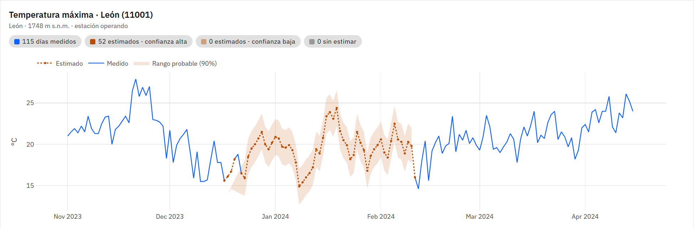

RETO HACKATÓN SIAMA · GUANAJUATO
Datos del clima sin huecos.
Y sin engaños.
Completamos los días que las estaciones no registraron y decimos siempre qué dato fue medido y cuál es estimado.
[Nombre del equipo] · [Integrantes]
EL PROBLEMA
Las estaciones del clima a veces se quedan en silencio
Cada cuadro es un día. Los vacíos son días sin dato de lluvia o temperatura.
Equipo descompuesto
Estación suspendida
Registro incompleto
Hoy esos huecos se rellenan a mano, caso por caso.
POR QUÉ IMPORTA
Un hueco pequeño termina en una mala decisión sobre el agua
Faltan días de lluvia
Promedios y sequías mal calculados
Decisiones sobre el agua con datos sesgados
+5,000
consultas al mes en SIAMA de ciudadanía, investigadores y autoridades.
Un dato estimado que parece medido rompe su confianza.
NUESTRA IDEA
Llenar cada hueco con lo que midieron las estaciones vecinas, y marcarlo como estimado.
Ningún dato estimado se presenta como medido. Nunca.
ASÍ LO VE LA GENTE
Medido, estimado o sin dato: se distingue a simple vista

Medido
Lo registró la estación.
Estimado
Lo calculamos y damos su rango: «entre 18 y 22 °C».
Sin estimar
Si no hay información confiable, no lo inventamos.
CÓMO FUNCIONA
Tres pasos, automáticos, con un solo comando
1
Revisa
Encuentra los días sin dato y retira los valores imposibles, como lluvia negativa.
2
Rellena
Usa las estaciones vecinas que se parecen y elige solo el mejor método para cada hueco.
3
Muestra
Mapa y gráfica dentro de Monitor Precipitaciones y Monitor Temperaturas.
Si un hueco no se puede llenar con confianza, el sistema lo dice y lo deja vacío.
¿FUNCIONA?
Lo probamos: borramos datos reales y los volvimos a calcular
0.96 °C
de error promedio en temperatura máxima
9 de 10
valores reales cayeron dentro del rango que anunciamos
0
datos estimados presentados como medidos
Error promedio en temperatura máxima (menos es mejor)
Prueba con datos sintéticos que tienen el mismo formato que el paquete oficial. Con los datos reales, las cifras se recalculan solas.
LISTO PARA SIAMA
Se conecta a SIAMA sin rediseñar nada
Una etiqueta y el tablero ya lo muestra
<siama-huecos variable="tmax">
</siama-huecos>
Funciona dentro de Monitor Precipitaciones y Monitor Temperaturas tal como están hoy.
API documentada
Docker
PostgreSQL + PostGIS
Y responde como asistente de IA
¿Qué tan completa está la estación León?
El 88 % de los días de lluvia fueron medidos. Los 440 días restantes se estimaron con confianza alta.
Redactado por IBM Granite en watsonx.ai
Con tecnología IBM:
watsonx.ai
Code Engine
Databases for PostgreSQL
Carbon Design System
EN RESUMEN
Series completas,
confiables y honestas.
La base que necesita el futuro módulo de inteligencia artificial de SIAMA.
Ahora, véanlo funcionando →
[Nombre del equipo] · Gracias